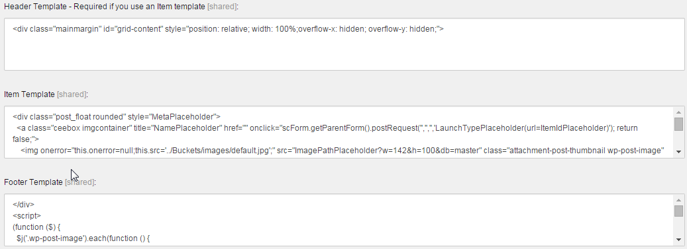

Add a search result view
You can add new search result views if the provided views do not fit your needs.
Sitecore can show search results in the following different views: ID, Image, Lock, Media, Preview, Table, and Tag view. You can add new views if these views do not fit your needs.
This topic outlines how to:
To add a new view:
Navigate to /sitecore/system/Settings/Buckets/Views and in the Views folder, create a new view item.
In the Header Template, Item Template, and Footer Template fields, specify placeholders and HTML tags to format the search result:
 You can use the following built-in placeholder names to display item values in the search result:
Placeholder
Description
MetaPlaceholder
The CSS style that you want to use when the results are displayed.
LaunchTypePlaceholder
Specifies the result is launched in a new tab or in a new Content Editor window.
ItemIdPlaceholder
The item ID.
ImagePathPlaceholder
The path to the image of the item.
NamePlaceholder
The name of the item.
TemplatePlaceholder
The name of the template that the item is based on.
BucketPlaceholder
The bucket that this result comes from.
ContentPlaceholder
The content of the result.
VersionPlaceholder
The version of the content item.
CreatedPlaceholder
The date that the content item was created.
CreatedByPlaceholder
The person who created this item.
You show dynamic fields in search result views by specifying the field in the buckets.dynamicFields pipeline. For example, if you want to display Facebook likes for a specific item you can use this pipeline to display this information in the search results.
The buckets.dynamicFields pipeline aggregates a dictionary of keys and values. To obtain the information you want, you must refer to the relevant key and value in the dictionary. In the Facebook example, the key is Flikes and the value is the number of likes specified by the Facebook API.
To display a dynamic field in a specific search view:
In the content tree, navigate to /sitecore/system/Settings/Buckets and in the Views folder, select the search view.
On the Content tab, in the View Details section, click the Item Template field.
This field contains the HTML output for the search view.
To insert the placeholder, enter the relevant key followed by
DynamicPlaceholder.For example, if the key for Facebook likes is
Flikesin the dictionary, the placeholder is:FlikesDynamicPlaceholder.
When Sitecore displays the search results, it looks at all the dynamic placeholders and replaces them with the value of each specific key.